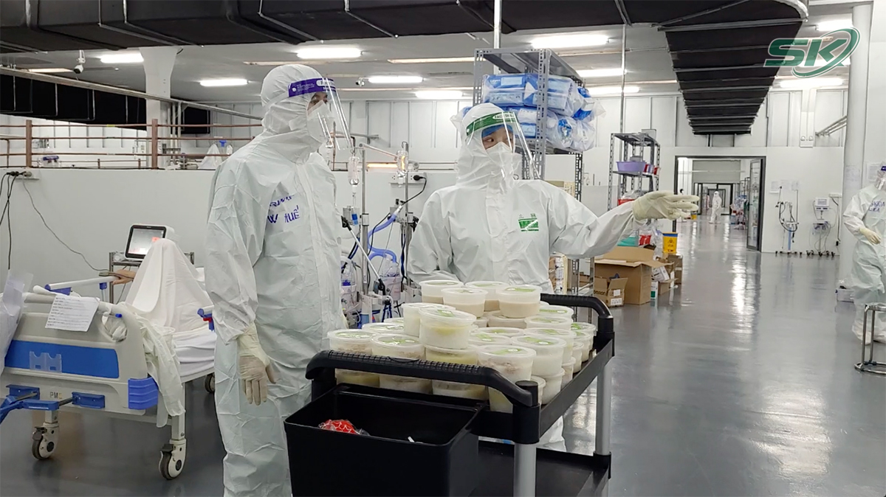

Chính phủ ban hành Quy định tạm thời "Thích ứng an toàn, linh hoạt, kiểm soát hiệu quả dịch COVID-19"
12/10/2021 22:07 (GMT+7)Phó Thủ tướng Chính phủ Vũ Đức Đam vừa ký Nghị quyết số 128/NQ-CP của Chính phủ ban hành Quy định tạm thời "Thích ứng an toàn, linh hoạt, kiểm soát hiệu quả dịch COVID-19".
Bảo vệ tối đa sức khỏe, tính mạng của người dân
Nghị quyết nêu: Tổ chức Y tế Thế giới, các nhà khoa học và các quốc gia nhận định dịch COVID-19 chưa thể kiểm soát được hoàn toàn trước năm 2023; có thể xuất hiện các chủng virus mới nguy hiểm hơn làm cho dịch diễn biến phức tạp khó lường. Tuy nhiên, việc bao phủ vaccine, có thuốc điều trị giúp giảm số ca nặng, tử vong và giảm tỉ lệ mắc. Do vậy, đã có nhiều quốc gia thay đổi chiến lược ứng phó dịch bệnh từ cố gắng dập tắt dứt điểm sang sống chung an toàn với dịch bệnh.
Đối với Việt Nam, một số kinh nghiệm đã bước đầu được đúc kết từ thực tiễn phòng, chống dịch; năng lực ứng phó của hệ thống y tế từng bước được nâng lên; diện bao phủ vaccine nhất là đối với nhóm người có nguy cơ cao, các đô thị lớn tăng nhanh giúp chúng ta chủ động hơn trong phòng, chống dịch.
Bên trong Trung tâm Hồi sức tích cực điều trị người bệnh COVID-19 thuộc Bệnh viện Trung ương Huế tại TP Hồ Chí Minh (ảnh chụp hồi tháng 9/2021). Ảnh Bảo Loan
Từ thực tiễn tình hình, ý kiến phân tích của các nhà khoa học, chuyên gia, ý kiến của các địa phương và Ban Chỉ đạo Quốc gia phòng, chống dịch COVID-19, Chính phủ xác định mục tiêu công tác phòng, chống dịch vẫn là nhiệm vụ trọng tâm nhằm bảo vệ tối đa sức khỏe, tính mạng của Nhân dân, khôi phục, phát triển kinh tế - xã hội, bảo đảm an sinh, trật tự an toàn xã hội; chuyển hướng chiến lược phòng, chống dịch sang "thích ứng an toàn, linh hoạt, kiểm soát hiệu quả dịch COVID-19".
Chính phủ ban hành Quy định tạm thời "Thích ứng an toàn, linh hoạt, kiểm soát hiệu quả dịch COVID-19" (sau đây gọi là Quy định) với mục tiêu bảo vệ tối đa sức khỏe, tính mạng của người dân; hạn chế đến mức thấp nhất các ca mắc, ca chuyển bệnh nặng, tử vong do COVID-19; khôi phục và phát triển kinh tế-xã hội, bảo đảm an ninh, trật tự an toàn xã hội; thực hiện mục tiêu kép, đưa cả nước chuyển sang trạng thái bình thường mới sớm nhất có thể, phấn đấu trong năm 2021.
Trong khi tỉ lệ bao phủ vaccine đang được đẩy nhanh nhưng chưa đạt độ bao phủ toàn dân và các loại thuốc điều trị COVID-19 đang được phát triển, đưa vào sử dụng nhưng chưa có thuốc đặc trị. Nhằm đảm bảo sự thống nhất thực hiện theo quy định, hướng dẫn của các bộ, ngành đồng thời phát huy tính chủ động, sáng tạo của địa phương trong kiểm soát tình hình dịch bệnh, tạo điều kiện khôi phục sản xuất, kinh doanh, phát triển kinh tế - xã hội, đưa đời sống sinh hoạt của Nhân dân dần trở lại tình trạng bình thường mới. Không để tình trạng cục bộ, cát cứ trong ban hành và thực hiện các giải pháp trên mức cần thiết gây ảnh hưởng tiêu cực tới sản xuất kinh doanh, đời sống xã hội.
Phân loại cấp độ dịch theo 4 cấp
Quan điểm của Chính phủ là bảo đảm mục tiêu kép nhưng đặt sức khỏe, tính mạng người dân lên trên hết, trước hết; các giải pháp phòng, chống dịch phải dựa trên cơ sở khoa học, phù hợp với thực tiễn và điều kiện của đất nước; đảm bảo người dân được bảo vệ tốt nhất trước dịch bệnh, được tiếp cận dịch vụ y tế sớm nhất, nhanh nhất, ngay từ cơ sở; nhưng không gây ách tắc cho lưu thông, sản xuất.
Tăng cường sự lãnh đạo, chỉ đạo của Đảng; huy động cả hệ thống chính trị; đề cao trách nhiệm của các cấp ủy Đảng, chính quyền, trách nhiệm người đứng đầu trong phòng, chống dịch, thực hiện mục tiêu kép; bảo đảm sự lãnh đạo, chỉ đạo thống nhất trong toàn quốc, đồng thời phát huy tính chủ động, sáng tạo của chính quyền các cấp, nhất là cấp cơ sở.
Trong phòng, chống dịch phải lấy phòng dịch là cơ bản, lâu dài; y tế là lực lượng nòng cốt cùng với các lực lượng quân đội, công an,... nhưng phải huy động sự tham gia của tất cả các lực lượng, các tầng lớp trong xã hội. Phát huy vai trò của người dân, doanh nghiệp là trung tâm, là chủ thể trong phòng, chống dịch, trong sản xuất, kinh doanh, sinh hoạt an toàn.
Hình ảnh toàn cảnh một góc phía bên trong Trung tâm Hồi sức tích cực điều trị người bệnh COVID-19 thuộc Bệnh viện Trung ương Huế tại TP Hồ Chí Minh (Bệnh viện Dã chiến số 14, tại quận Tân Phú) hồi tháng 9/2021.
Các giải pháp thích ứng an toàn, linh hoạt, kiểm soát hiệu quả dịch COVID-19 phải được thực hiện dứt khoát, kịp thời, quyết liệt; đảm bảo hài hòa giữa các giải pháp chuyên môn y tế với các giải pháp hành chính, kinh tế-xã hội. Các giải pháp y tế phải đồng bộ giữa cách ly với xét nghiệm, điều trị, vaccine, theo phương châm "cách ly, xét nghiệm là then chốt, vaccine, thuốc điều trị là điều kiện tiên quyết".
Quy định hướng dẫn cụ thể về phân loại đánh giá, xác định cấp độ dịch. Theo đó, phân loại cấp độ dịch theo 4 cấp:
Cấp 1: Nguy cơ thấp (bình thường mới) tương ứng với màu xanh.
Cấp 2: Nguy cơ trung bình tương ứng với màu vàng.
Cấp 3: Nguy cơ cao tương ứng với màu cam.
Cấp 4: Nguy cơ rất cao tương ứng với màu đỏ.
Phạm vi đánh giá cấp độ dịch: Đánh giá từ quy mô cấp xã. Khuyến khích đánh giá từ phạm vi, quy mô nhỏ nhất có thể (dưới cấp xã) nhằm đảm bảo linh hoạt, hiệu quả.
Quy định cũng nêu rõ 3 tiêu chí đánh giá cấp độ dịch gồm: Tỉ lệ ca mắc mới tại cộng đồng/số dân/thời gian; độ bao phủ vaccine (lưu ý nhóm tuổi có nguy cơ cao, tỉ lệ tiêm mũi thứ nhất, tỉ lệ tiêm đủ liều); khả năng thu dung, điều trị của các tuyến (lưu ý xác định rõ khả năng thu dung, điều trị hiện có và kế hoạch bổ sung).
Về xác định cấp độ dịch, Bộ Y tế hướng dẫn các tiêu chí, phương pháp đánh giá và xác định cấp độ dịch. Căn cứ vào Hướng dẫn của Bộ Y tế và tình hình dịch trên địa bàn, UBND tỉnh, thành phố trực thuộc trung ương quyết định chuyển đổi cấp độ dịch. Trong trường hợp nâng cấp độ dịch thì phải thông báo trước tối thiểu 48 giờ cho người dân, tổ chức, doanh nghiệp biết, có sự chuẩn bị trước khi áp dụng.
Hình ảnh các nhân viên y tế thực hiện nhiệm vụ chống dịch COVID-19 tại phường Thanh Xuân Trung - Hà Nội hồi tháng 8/2021. Ảnh: Lê Bảo
Các biện pháp y tế bao gồm cách ly y tế, xét nghiệm, thu dung, điều trị, tiêm chủng thực hiện theo hướng dẫn của Bộ Y tế ở tất cả các cấp độ.
Quy định nêu cụ thể các biện pháp áp dụng theo 4 cấp độ dịch đối với một số hoạt động của tổ chức, cơ quan, doanh nghiệp gồm:
1- Tổ chức hoạt động tập trung trong nhà, ngoài trời đảm bảo các biện pháp phòng, chống dịch;
2- Vận tải hành khách công cộng đường bộ, đường thủy nội địa, hàng hải đảm bảo phòng, chống dịch COVID-19;
3- Lưu thông, vận chuyển hàng hóa nội tỉnh hoặc liên tỉnh;
4- Sản xuất, kinh doanh, dịch vụ (Cơ sở sản xuất, đơn vị thi công các dự án, công trình giao thông, xây dựng; Cơ sở kinh doanh dịch vụ bao gồm trung tâm thương mại, siêu thị, cửa hàng tiện ích, chợ đầu mối; Nhà hàng/quán ăn, chợ truyền thống; Cơ sở kinh doanh các dịch vụ có nguy cơ lây nhiễm cao như vũ trường, karaoke, mát xa, quán bar, internet, trò chơi điện tử, làm tóc (bao gồm cắt tóc), làm đẹp và các cơ sở khác do địa phương quyết định; hoạt động bán hàng rong, vé số dạo,...);
5- Hoạt động giáo dục, đào tạo trực tiếp;
6- Hoạt động cơ quan, công sở;
7- Các cơ sở tôn giáo, tín ngưỡng, thờ tự;
8- Hoạt động nghỉ dưỡng, khách sạn, nhà nghỉ, tham quan du lịch; biểu diễn văn hóa, nghệ thuật, thể dục, thể thao;
9- Ứng dụng công nghệ thông tin.
Đối với cá nhân, Quy định cũng nêu rõ các biện pháp về tuân thủ 5K, ứng dụng công nghệ thông tin, về việc đi lại của người dân và về điều trị tại nhà đối với người nhiễm COVID-19 ở từng cấp độ dịch.
Tạm thời không áp dụng Chỉ thị 15, 16 và 19 của Thủ tướng Chính phủ
Quy định này được áp dụng thống nhất trong toàn quốc. Căn cứ vào các hướng dẫn của Bộ Y tế và các bộ, ngành, Ủy ban nhân dân các tỉnh, thành phố quyết định các biện pháp hành chính phù hợp bao gồm các quy định.
Đồng thời, hướng dẫn cụ thể về công suất, số lượng người tham gia các hoạt động sản xuất, kinh doanh, dịch vụ, văn hóa, văn nghệ, sự kiện tập trung đông người,... và có thể linh hoạt áp dụng các biện pháp bổ sung cụ thể nhưng không trái với quy định của Trung ương, không gây ách tắc lưu thông hàng hóa, sản xuất kinh doanh và đi lại, sinh hoạt của nhân dân.
Trường hợp các quy định, hướng dẫn của Trung ương không phù hợp, khả thi thì kịp thời báo cáo cơ quan ban hành quy định, hướng dẫn. Cơ quan ban hành quy định, hướng dẫn phải có chỉ đạo ngay để tháo gỡ vướng mắc đồng thời nghiên cứu sửa đổi quy định, hướng dẫn.
Chủ tịch UBND cấp tỉnh quyết định cách ly y tế vùng (phong tỏa ổ dịch) nhanh nhất, ở phạm vi hẹp nhất có thể và triển khai các hoạt động đảm bảo an sinh xã hội, tiếp cận dịch vụ y tế để người dân yên tâm tuân thủ các quy định phòng, chống dịch.
Tạm thời không áp dụng các quy định tại Khoản 1 Điều 1 của Nghị quyết 86/NQ-CP ngày 6/8/2021 của Chính phủ và các Chỉ thị số 15/CT-TTg ngày 27/3/2020, Chỉ thị số 16/CT-TTg ngày 31/3/2020, Chỉ thị số 19/CT-TTg ngày 24/4/2020 của Thủ tướng Chính phủ, Quyết định số 2686/QĐ-BCĐQG ngày 31 tháng 5 năm 2021 của Ban Chỉ đạo Quốc gia phòng, chống dịch COVID-19.
Trường hợp cần thiết phải áp dụng các biện pháp phòng, chống dịch trên quy mô toàn tỉnh, thành phố trực thuộc trung ương cao hơn các biện pháp tại Quy định này thì Chủ tịch UBND cấp tỉnh báo cáo Bộ Y tế, Thủ tướng Chính phủ.
Lê Bảo